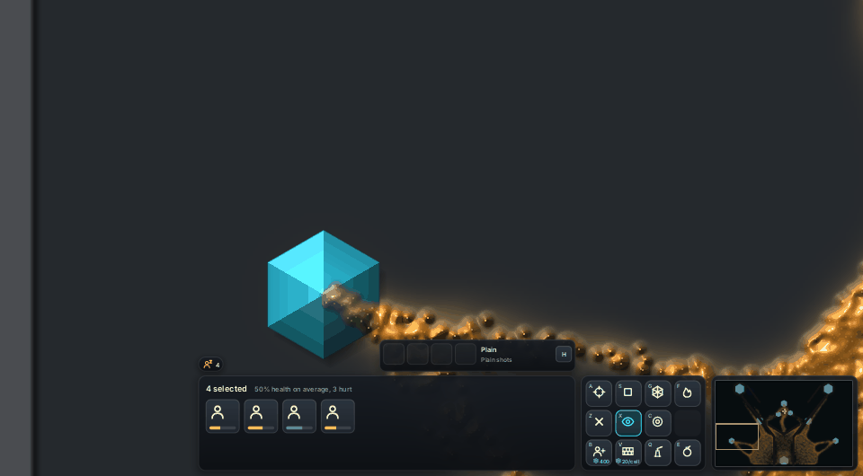
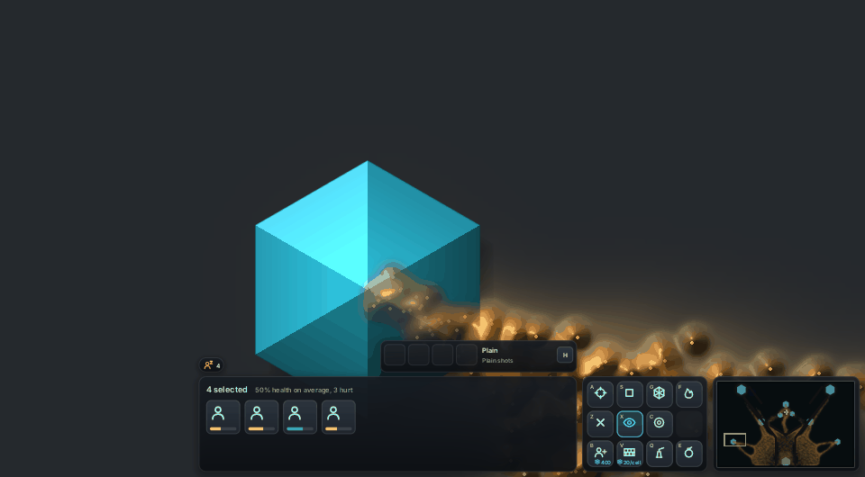
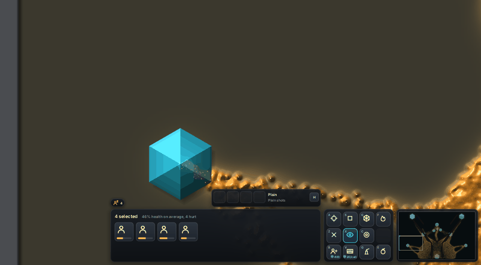
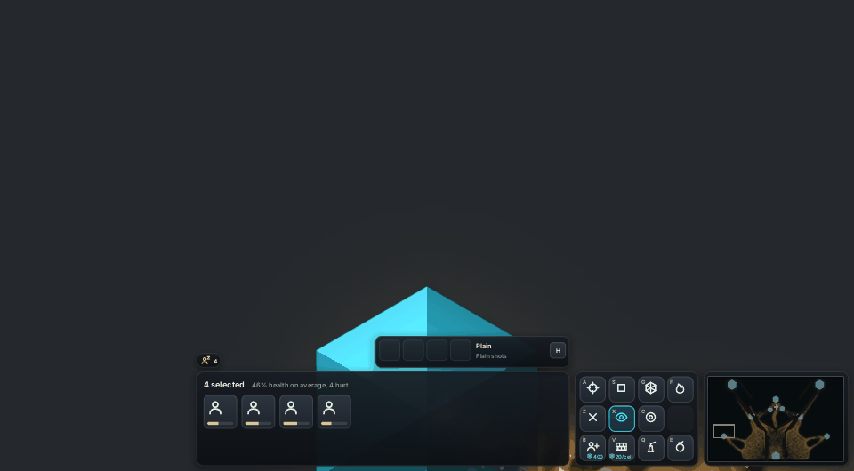

The owner's ruling: "slime shouldn't go under crystals, they should grow over it but it needs to still clearly look like a crystal." The mould on a crystal is now a film over its faces. Its cover follows the mould's real thickness there, so a thin film shows the faces through and a feeding mat covers up to three quarters. The film is lit by the face it lies on, so the six faces still read. The charge glows up through it, the hexagon's edge stays crisp, and mould that is draining the crystal takes a cyan cast.
The left crystal on the fork map, 12 to 74 game seconds, as the mould reaches and covers it. Before is main.
The mould on a crystal now covers up to 92% where it is thick, against 75% in the first pass. Its gold carries its own bumps and glints across the faces. The crystal's edge line now sits under the mould, not on top of it. Less cyan comes up through the film, so the mould reads as on top while the hexagon and a faint glow still show.




Cover = 0.75 (1 - e^(-25 th)) from the mould's thickness on each pixel. The mould's colour on crystal cells is now recovered from the engine's frame; before, the middle of a big crystal kept the engine's cyan and the mould there read pale. Cost: a few operations on crystal pixels only, not measurable on llvmpipe.